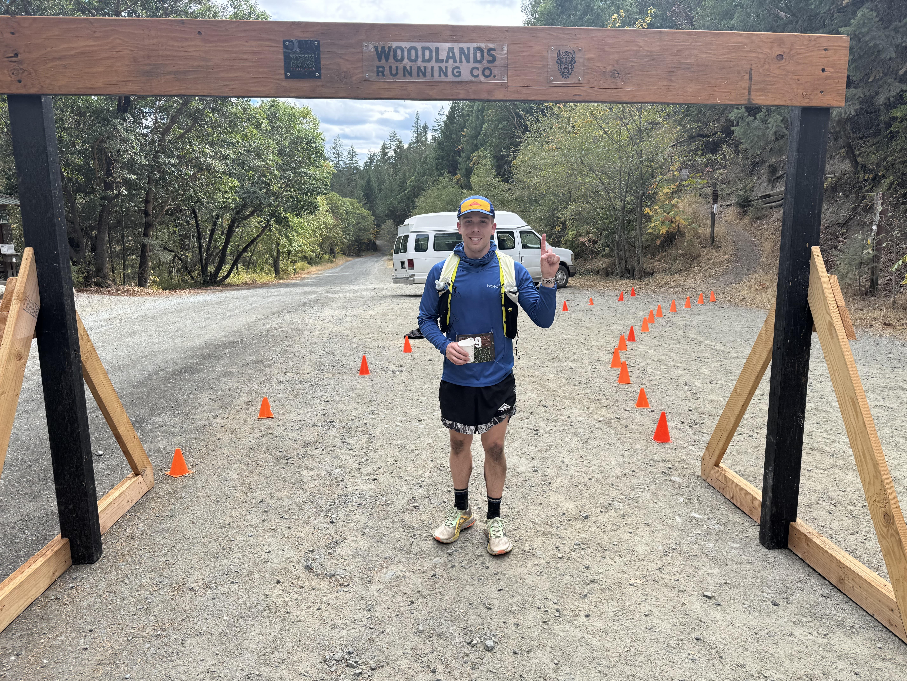

I am a Data Engineer with experience in database migrations, data transformation, and optimizing SQL. I have worked with MSSQL, PL/SQL, and cloud platforms like AWS, GCP and Azure. My background spans IT support, networking, automation, and technical consulting. Passionate about solving complex data challenges and leveraging technology for efficiency.